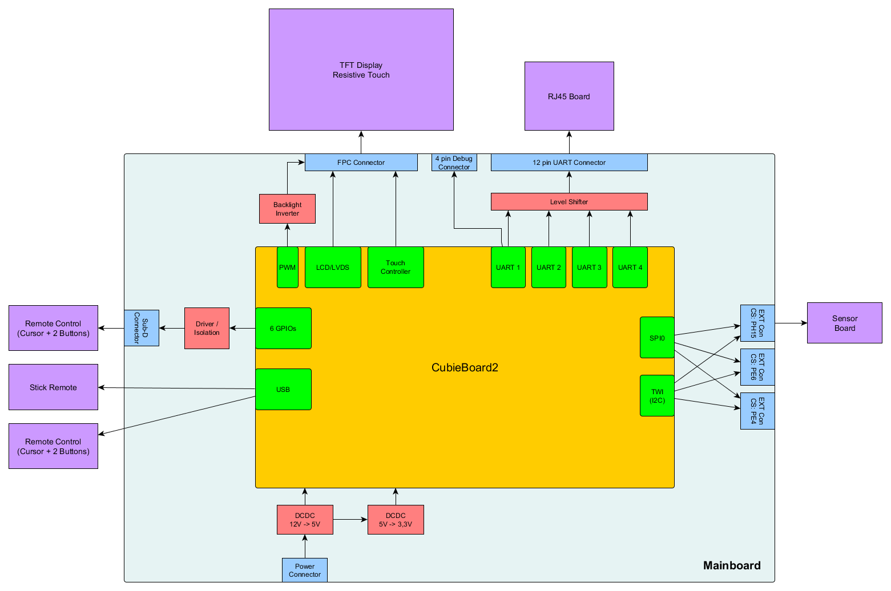

Hardware Architecture
The block diagram below outlines the main building blocks of the Flight Computer's the hardware architecture.

Main components
Processor board
The Cubieboard is a small and inexpensive development board based on Allwinner A10 and A20 processors. The current version of the flight computer uses Cubieboard 2 A20. Compared to the more famous Raspberry Pi the Cubieboard 2 offers a faster dual core processor and more interfaces for LCDs, sensors and UARTS. There is an active community developing Linux for Allwinner processors on http://linux-sunxi.org/ More details about the Cubieboard can be found here: Cubieboard
A very detailed description of the Cubieboard can be found on http://cubieboard.org/
Display
Pixel Qi displays offer very good sunlight readability at low power consumption. Currently PQ070W01, and PQ070W02 display are used . These 7 inch displays are coming at a resolution of 1024×600 pixel. They offer 18 bit colour depth in transmissive mode but also support transflective, and reflective modes at lower colour depth. While they are still available in the market, they don't seem to be built anymore. It is not an issue yet, however we will need to find a migration path to other displays in the future. Check out the realized variants here.
Adapter board
The adapter board serves the following functions:
- provide power for display, processor board, RJ45 connectors and extension connectors
- interface the Cubieboard LCD connectors to a FPC with correct pinout for the Pixel Qi Display
- interface a resistive touchscreen to Cubieboard connectors
- convert TTL to RS232 levels for UARTS
- provide I2C, SPI, GPIO and power at extension connectors
- comes with an AD-converter for battery voltage indication via I2C
More details about the Adapterboard can be found here: Electrical Tests Adapterboard
Sensor board
The sensor board provides the following sensors to the flight computer:
- static pressure
- dynamic pressure
- TEK pressure
- 3D acceleration
- 3D gyros
- 3D magnetometer
- air temperature (connector for external sensor)
Additional features are:
- connector for optional additional I2C sensors
- audio amplifier
- I2C to single wire bridge
- I2C EEPROM for calibration data
More details about the Sensorboard can be found here: Electrical Tests Sensorboard
RJ45 board
The RJ45 board provides four UARTS on RJ45 sockets with IGC compatible pin out. Each of the sockets power supplies is protected by an individual, self resetting fuse. More details about the RJ45-Board can be found here: Electrical Tests RJ45-Board